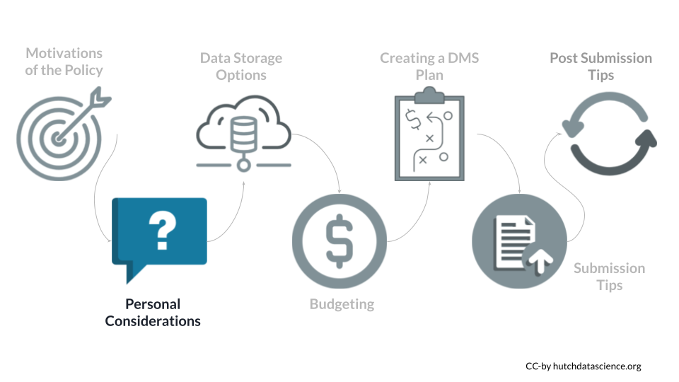
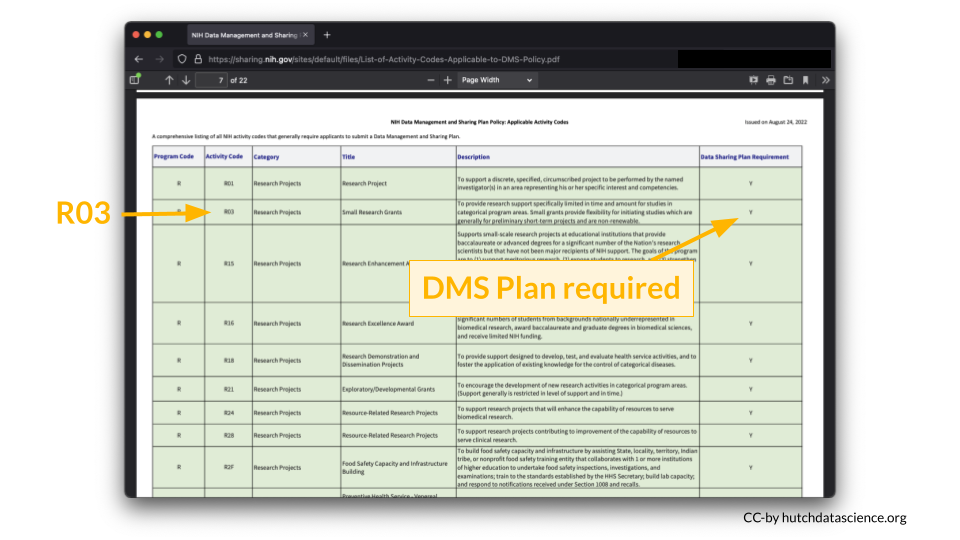
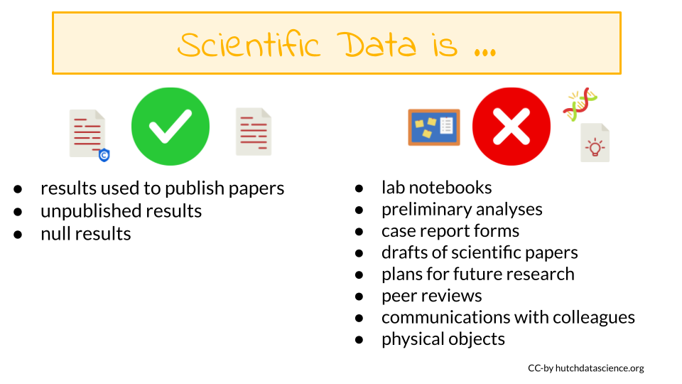

Chapter 2 Will this policy affect me?
You can refer to the NIH overview of which research will be covered by this new policy.

The major requirement of the policy is that all grant proposals (submitted after January 25th, 2023) for mechanisms that require compliance, must include a plan for how they will manage and share their data.
For certain grant mechanisms for projects that do not generate data, compliance with the policy is not required. For certain types of data, sharing is not possible, and a justification will be required instead.
The following outline several key questions:
- Is my research exempt from the policy?
- Does my research generate scientific data? If yes, you will need to submit a DMS Plan.
- When do I need to share my data?
- Can I elect to not share data? The short answer is yes. However, you must still justify this choice in a submitted DMS Plan.
2.1 What grant mechanisms don’t require compliance with the DMS policy?
The DMS Policy applies to all research that generates scientific data, including:
- Research Projects
- Some Career Development Awards (K)
- Small Business SBIR/STTR
- Research Centers
The DMS Policy does not apply to research and other activities that do not generate scientific data, including:
- Training (T)
- Fellowships (F)
- Construction (C06)
- Conference Grants (R13)
- Resource (G)
- Research-Related Infrastructure Programs (e.g., S06)
You can look up your NIH Activity Code here to see if you are required to submit a DMS Plan.
For example, I am interested in applying to a R03 award.

According to the table, a DMS Plan is required for this particular award.

2.2 Does my research generate scientific data?
The NIH Data Management and Sharing (DMS) Policy applies to all NIH-supported research generating scientific data. But what is “scientific data”?

2.2.1 Scientific data
Scientific data are the “recorded factual material of sufficient quality to validate and replicate research findings, regardless of whether the data are used to support scholarly publications”. This can include any of the following if they are applicable to your study:
- unpublished results
- null results
- results used to publish papers
2.2.2 Not scientific data
You are not expected to share:
- lab notebooks
- preliminary analyses
- case report forms
- drafts of scientific papers
- plans for future research
- peer reviews
- communications with colleagues
- physical objects (such as biospecimens)
2.3 What is the timeline for sharing data?
Data should be made available no later than publication or end of the award. This means that data underlying findings that are not published in peer-reviewed journals should be made available by the end of the award.
2.3.1 What about no cost extensions?
Scientific data should be made accessible as soon as possible, and no later than the time of an associated publication or the end of the performance period of the extramural award that generated the data. If a no cost extension is granted for an extramural award, scientific data should be made accessible no later than the time of an associated publication, or the end of the no cost extension, whichever comes first.